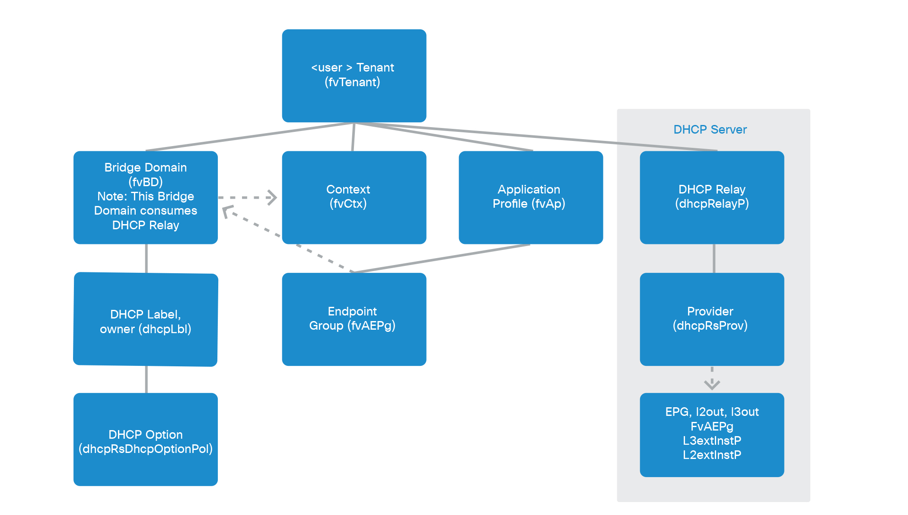
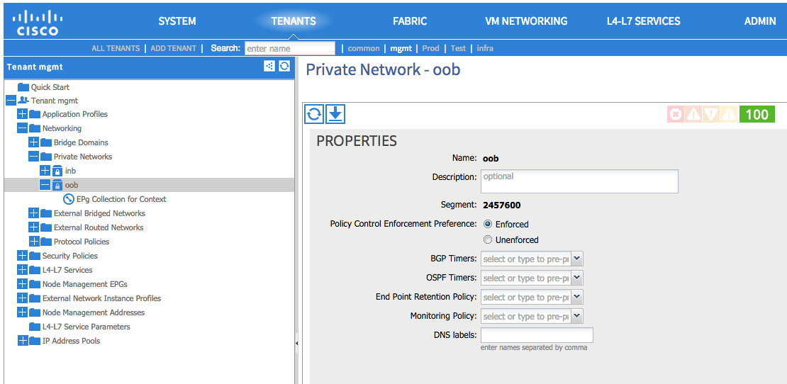
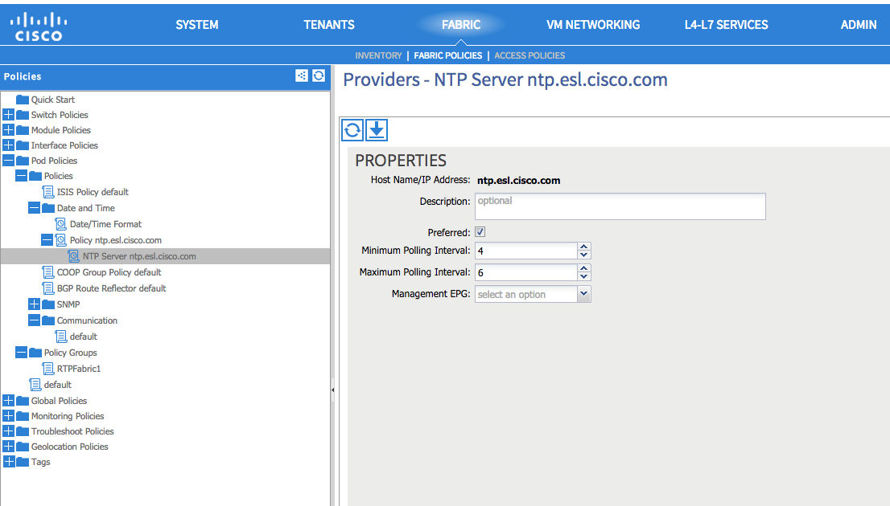
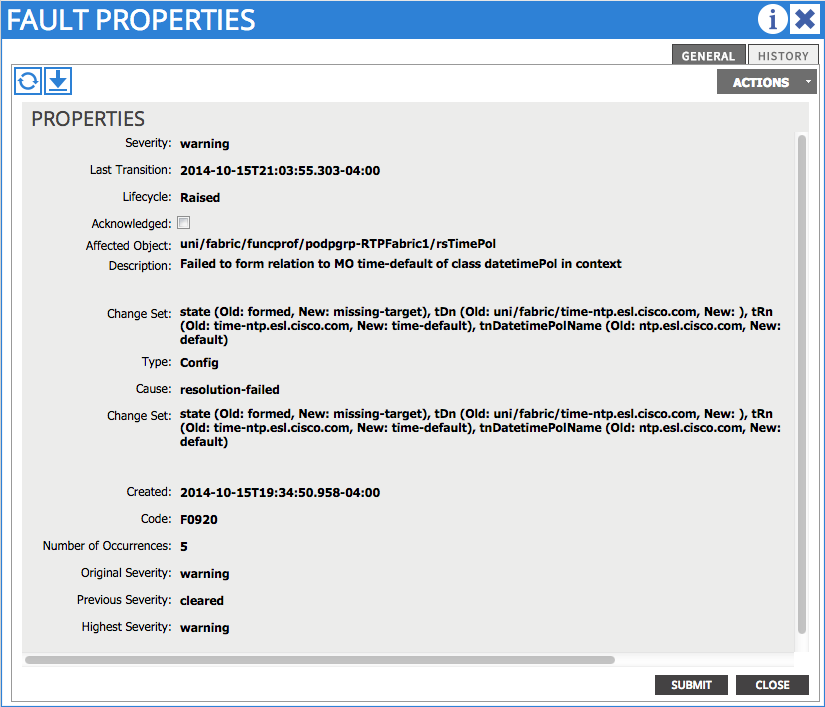
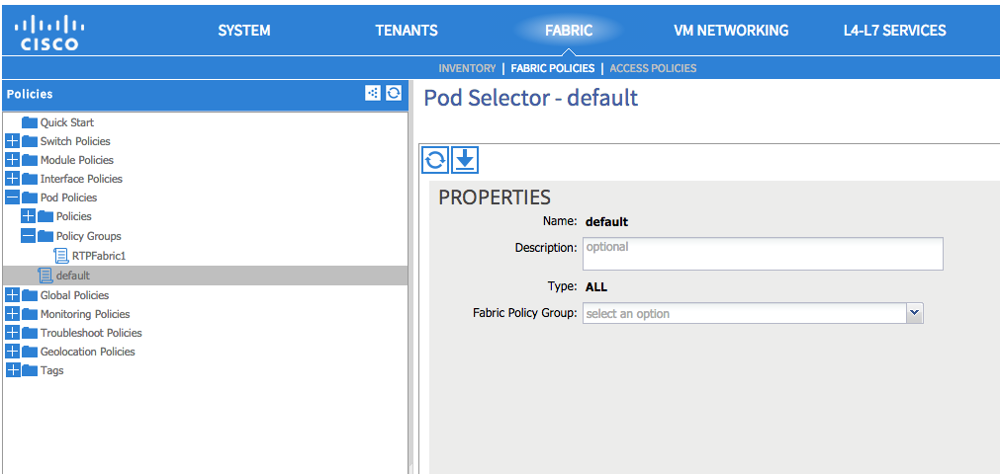

Common Network Services¶
Overview¶
This chapter covers the common network services like DNS, NTP, DHCP, etc. A common network service is any service that can be shared between the fabric nodes or tenants.
These services are handled differently in the way they are configured within the fabric.
- DNS: DNS profiles are configured globally as fabric policies and then can be applied as needed via a dns label at a EPG level.
- NTP: This is configured as a pod level policy.
- DHCP: DHCP relay is configured at a tenant level.
Fabric Verification¶
For most common network shared services configurations, if the management tenant or EPG is not configured or not working, the shared services policies will not be pushed down to the fabric nodes. Management tenant and EPG configuration should be verified along with shared services configuration.
DNS¶
APIC¶
It is verified first by looking at the management information tree then seeing how that policy is applied to the actual APIC configuration.
Verify that a DNS profile has been created by traversing to the following directory and using the cat command on the summary file:
/aci/fabric/fabric-policies/global-policies/dns-profiles/default
admin@RTP_Apic1:~> cd /aci/fabric/fabric-policies/global-policies/dns-profiles/default
admin@RTP_Apic1:default> cat summary
# dns-profile
name : default
description :
ownerkey :
ownertag :
management-epg : tenants/mgmt/node-management-epgs/default/out-of-band/default
dns-providers:
address preferred
-------------- ---------
171.70.168.183 yes
173.36.131.10 no
dns-domains:
name default description
--------- ------- -----------
cisco.com yes
It should be ensured that:
- The management-epg is pointing at a management EPG distinguished name
- There is at least one dns-provider configured
- There is a dns-domain configured
Next the DNS label verification can be done by changing to the following directory and looking at the following summary file:
/aci/tenants/mgmt/networking/private-networks/oob/dns-profile-labels/default
admin@RTP_Apic1:default> cd /aci/tenants/mgmt/networking/private-networks/oob/dns-profile-labels/default
admin@RTP_Apic1:default> cat summary
# dns-lbl
name : default
description :
ownerkey :
ownertag :
tag : yellow-green
When the policies are applied they push the DNS configuration down to Linux on the APIC. That configuration can be verified by looking at the /etc/resolv.conf file:
admin@RTP_Apic1:default> cat /etc/resolv.conf
# Generated by IFC
search cisco.com
nameserver 171.70.168.183
nameserver 173.36.131.10
The last verification step for the APIC would be to actually resolve a host using the host command and then ping that host.
admin@RTP_Apic1:default> host www.cisco.com
www.cisco.com is an alias for www.cisco.com.akadns.net.
www.cisco.com.akadns.net is an alias for origin-www.cisco.com.
origin-www.cisco.com has address 72.163.4.161
origin-www.cisco.com has IPv6 address 2001:420:1101:1::a
admin@RTP_Apic1:default> ping www.cisco.com
PING origin-www.cisco.com (72.163.4.161) 56(84) bytes of data.
64 bytes from www1.cisco.com (72.163.4.161): icmp_seq=1 ttl=238 time=29.3 ms
64 bytes from www1.cisco.com (72.163.4.161): icmp_seq=2 ttl=238 time=29.0 ms
^C
--- origin-www.cisco.com ping statistics ---
2 packets transmitted, 2 received, 0% packet loss, time 1743ms
rtt min/avg/max/mdev = 29.005/29.166/29.328/0.235 ms
Fabric Nodes¶
The policy that is applied needs to be looked at by inspecting the raw management information tree. Once that is verified, next step is to look at the DNS configuration that is applied to the fabric node as a result of that policy.
Verify that a DNS policy is applied by changing to the following directory and listing out the contents:
/mit/uni/fabric/dnsp-default
rtp_leaf1# cd /mit/uni/fabric/dnsp-default
rtp_leaf1# ls -1
dom-cisco.com
mo
prov-[171.70.168.183]
prov-[173.36.131.10]
rsProfileToEpg
rsProfileToEpg.link
rsProfileToEpp
rsProfileToEpp.link
rtdnsProfile-[uni--ctx-[uni--tn-mgmt--ctx-oob]--dnslbl-default]
summary
The following should be seen:
- The DNS providers listed as prov-[ipaddress]
- The DNS domains listed as dom-[domainname]
- The summary file in the rtdnsProfile-... directory has a tDn that points to a valid dnslabel
- The rsProfileToEpg.link should exist and resolve to a valid place in the management information tree
- The rsProfileToEpp.link should exist and resolve to a valid place in the management information tree
Verifying the dnslabel on the fabric node can be done by looking at the summary file in the rtdsnProfile-... directory, taking the tDn reference and prefacing it with /mit, and and cat the summary file in the resulting directory.
rtp_leaf1# cat rtdnsProfile-[uni--ctx-[uni--tn-mgmt--ctx-oob]--dnslbl-default]/summary
# DNS Profile Label
tDn : uni/ctx-[uni/tn-mgmt/ctx-oob]/dnslbl-default
childAction :
dn : uni/fabric/dnsp-default/rtdnsProfile-[uni/ctx-[uni/tn-mgmt/ctx-oob]/dnslbl-default]
lcOwn : local
modTs : 2014-10-15T14:16:14.850-04:00
rn : rtdnsProfile-[uni/ctx-[uni/tn-mgmt/ctx-oob]/dnslbl-default]
status :
tCl : dnsLblDef
rtp_leaf1# cat /mit/uni/ctx-\[uni--tn-mgmt--ctx-oob\]/dnslbl-default/summary
# DNS Profile Label
name : default
childAction :
descr :
dn : uni/ctx-[uni/tn-mgmt/ctx-oob]/dnslbl-default
lcOwn : policy
modTs : 2014-10-15T14:16:14.850-04:00
monPolDn :
ownerKey :
ownerTag :
rn : dnslbl-default
status :
tag : yellow-green
The policy that is pushed to the fabric node results in the DNS configuration being applied to Linux. The DNS configuration can be verified by first looking at /etc/dcos_resolv.conf to verify DNS is enabled and /etc/resolv.conf to verify how DNS is configured.
rtp_leaf1# cat /etc/dcos_resolv.conf
# DNS enabled
rtp_leaf1# cat /etc/resolv.conf
search cisco.com
nameserver 171.70.168.183
nameserver 173.36.131.10
On the fabric nodes, the host command is not available so ping is the best way to try and resolve a host.
rtp_leaf1# ping www.cisco.com
PING origin-www.cisco.com (72.163.4.161): 56 data bytes
64 bytes from 72.163.4.161: icmp_seq=0 ttl=238 time=29.153 ms
64 bytes from 72.163.4.161: icmp_seq=1 ttl=238 time=29.585 ms
^C--- origin-www.cisco.com ping statistics ---
2 packets transmitted, 2 packets received, 0% packet loss
round-trip min/avg/max/stddev = 29.153/29.369/29.585/0.216 ms
NTP¶
Note
NTP can be configured with either an IP address or a hostname, but when configured with a hostname DNS must be configured in order to resolve the hostname.
APIC¶
NTP policies are applied globally by first applying a global pod-selector policy which points to a policy-group. This can be verified by changing to /aci/fabric/fabric-policies/pod-policies/pod-selector-default-all and viewing the summary file. In this case the policy-group is set to RTPFabric1:
admin@RTP_Apic1:~> cd /aci/fabric/fabric-policies/pod-policies/pod-selector-default-all
admin@RTP_Apic1:pod-selector-default-all> cat summary
# pod-selector
name : default
type : all
description :
ownerkey :
ownertag :
fabric-policy-group : fabric/fabric-policies/pod-policies/policy-groups/RTPFabric1
Make note of the RTPFabric1.
The Pod policy-group can be verified by changing to the directory to /aci/fabric/fabric-policies/pod-policies/policy-groups/ and viewing the summary file:
admin@RTP_Apic1:pod-policies> cd /aci/fabric/fabric-policies/pod-policies/policy-groups/
admin@RTP_Apic1:policy-groups> cat summary
policy-groups:
name date-time-policy isis-policy coop-group-policy bgp-route-reflector- communication-policy snmp-policy
policy
---------- ---------------- ----------- ----------------- -------------------- -------------------- -----------
RTPFabric1 ntp.esl.cisco.com default default default default default
Ensure that the date-time-policy is pointed at the proper date-time-policy name
Verify that a NTP policy has been created by traversing to the following directory and using the cat command on the summary file for the specific date-time policy configured:
/aci/fabric/fabric-policies/pod-policies/policies/date-and-time/
admin@RTP_Apic1:> cd /aci/fabric/fabric-policies/pod-policies/policies/date-and-time/
admin@RTP_Apic1:> cat date-and-time-policy-ntp.esl.cisco.com/summary
# date-and-time-policy
name : default
description :
administrative-state : enabled
authentication-state : disabled
ownerkey :
ownertag :
ntp-servers:
host-name-ip-address preferred minimum-polling- maximum-polling- management-epg
interval interval
-------------------- --------- ---------------- ---------------- ---------------------
ntp.esl.cisco.com yes 4 6 tenants/mgmt/
node-management-epgs/
default/out-of-band/
default
- Ensure the administrative state is enabled
- Ensure the ntpserver is shown
- Ensure the management-epg is shown and resolves to a valid management epg.
- When the NTP policy is applied on the APIC it is pushed down to linux as an NTP configuration. This can be verified using the ntpstat command.
admin@RTP_Apic1:date-and-time> ntpstat
synchronised to NTP server (171.68.38.66) at stratum 2
time correct to within 952 ms
polling server every 64 s
- The NTP server should be synchronized.
- Netstat can also be checked on the APIC to ensure that the APIC is listening on port 123:
- The proper NTP server should be seen listed
admin@RTP_Apic1:date-and-time> netstat -anu | grep :123
udp 0 0 172.16.0.1:123 0.0.0.0:*
udp 0 0 10.122.254.211:123 0.0.0.0:*
udp 0 0 169.254.1.1:123 0.0.0.0:*
udp 0 0 169.254.254.254:123 0.0.0.0:*
udp 0 0 127.0.0.1:123 0.0.0.0:*
udp 0 0 0.0.0.0:123 0.0.0.0:*
udp 0 0 ::1:123 :::*
udp 0 0 fe80::92e2:baff:fe4b:fc7:123 :::*
udp 0 0 fe80::38a5:a2ff:fe9a:4eb:123 :::*
udp 0 0 fe80::f88d:a5ff:fe4c:419:123 :::*
udp 0 0 fe80::ce7:b9ff:fe50:4481:123 :::*
udp 0 0 fe80::3c79:62ff:fef0:214:123 :::*
udp 0 0 fe80::26e9:b3ff:fe15:a0e:123 :::*
udp 0 0 fe80::e89f:1dff:fedf:1f6:123 :::*
udp 0 0 fe80::f491:1ff:fe9f:f1de:123 :::*
udp 0 0 fe80::dc2d:dfff:fe88:20d:123 :::*
udp 0 0 fe80::e4cb:caff:feec:5bd:123 :::*
udp 0 0 fe80::a83d:1ff:fe54:597:123 :::*
udp 0 0 fe80::8c71:63ff:feb2:f4a:123 :::*
udp 0 0 :::123 :::*
Fabric nodes¶
Verify that a NTP policy has been created by traversing to the following directory and using the cat command on the summary file and list out the directory:
/mit/uni/fabric/time-default
rtp_leaf1# cd /mit/uni/fabric/time-default
rtp_leaf1# cat summary
# Date and Time Policy
name : default
adminSt : enabled
authSt : disabled
childAction :
descr :
dn : uni/fabric/time-default
lcOwn : resolveOnBehalf
modTs : 2014-10-15T13:11:19.747-04:00
monPolDn : uni/fabric/monfab-default
ownerKey :
ownerTag :
rn : time-default
status :
uid : 0
rtp_leaf1#
rtp_leaf1# ls -1
issues
mo
ntpprov-10.81.254.202
rtfabricTimePol-[uni--fabric--funcprof--podpgrp-RTPFabric1]
summary
- Ensure the adminSt is enabled
- Ensure the ntpprov-* directory is for the proper ntp provider.
- When the NTP policy is pushed to the fabric node it resolves to a NTP configuration in Linux that gets applied.
It can be verified using both show ntp peers and show ntp peer status commands:
rtp_leaf1# show ntp peers
--------------------------------------------------
Peer IP Address Serv/Peer
--------------------------------------------------
10.81.254.202 Server (configured)
rtp_leaf1# show ntp peer-status
Total peers : 1
* - selected for sync, + - peer mode(active),
- - peer mode(passive), = - polled in client mode
remote local st poll reach delay vrf
-------------------------------------------------------------------------------
*10.81.254.202 0.0.0.0 1 64 377 0.00041 management
- Ensure that the Peer IP Address is correct
- Ensure that the peer is a server
- Ensure that the vrf is shown as a management
DCHP Relay¶
There are two main components in the DHCP Relay configuration. The first is the policy which is configured under a tenant. The policy contains the DHCP server address as well as how (EPG) the DHCP server is reached.
The second component is under the tenant BD with a DHCP Relay label to link to the DHCP Relay Policy.
{kind=link}
APIC¶
The DHCP Relay policy can be verified through shell access by cd to /mit/uni/tn-<tenant name>/relayp-<DHCP Relay Profile Name>.
admin@RTP_APIC1:relayp-DHCP_Relay_Profile> ls
mo
provdhcp-[uni--tn-Prod--out-L3out--instP-ExtL3EPG]
rsprov-[uni--tn-Prod--out-L3out--instP-ExtL3EPG]
rsprov-[uni--tn-Prod--out-L3out--instP-ExtL3EPG].link
rtlblDefToRelayP-[uni--bd-[uni--tn-Prod--BD-MiddleWare]-isSvc-no--dhcplbldef-DHCP_Relay_Profile]
summary
admin@RTP_APIC1:relayp-DHCP_Relay_Profile> cat summary
# DHCP Relay Policy
name : DHCP_Relay_Profile
childAction :
descr :
dn : uni/tn-Prod/relayp-DHCP_Relay_Profile
lcOwn : local
modTs : 2014-10-16T15:43:03.139-07:00
mode : visible
monPolDn : uni/tn-common/monepg-default
owner : infra
ownerKey :
ownerTag :
rn : relayp-DHCP_Relay_Profile
status :
uid : 15374
In this last example, the DHCP relay policy name is DHCP_Relay_Profile. The provider is the EPG where the DHCP server is located. In this example the server is located through a layer 3 external routed domain named L3out.
The dhcpRsProv contains the address of the server IP address. From the DHCP relay policy directory, cd to the rsprov-* directory which in this example is rsprov-[uni–tn-Prod–out-L3out–instP-ExtL3EPG]
admin@RTP_APIC1:relayp-DHCP_Relay_Profile> cd rsprov-\[uni--tn-Prod--out-L3out--instP-ExtL3EPG\]
admin@RTP_APIC1:rsprov-[uni--tn-Prod--out-L3out--instP-ExtL3EPG]> ls
mo summary
admin@RTP_APIC1:rsprov-[uni--tn-Prod--out-L3out--instP-ExtL3EPG]> cat summary
# DHCP Provider
tDn : uni/tn-Prod/out-L3out/instP-ExtL3EPG
addr : 10.30.250.1
childAction :
dn : uni/tn-Prod/relayp-DHCP_Relay_Profile/rsprov-[uni/tn-Prod/out-L3out/instP-ExtL3EPG]
forceResolve : no
lcOwn : local
modTs : 2014-10-16T15:43:03.139-07:00
monPolDn : uni/tn-common/monepg-default
rType : mo
rn : rsprov-[uni/tn-Prod/out-L3out/instP-ExtL3EPG]
state : formed
stateQual : none
status :
tCl : l3extInstP
tType : mo
uid : 15374
Fabric nodes¶
From the fabric nodes, confirmation that the relay is configured properly is with the CLI command show dhcp internal info relay address. The command show ip dhcp relay presents similar information.
rtp_leaf1# show dhcp internal info relay address
DHCP Relay Address Information:
DHCP relay intf Vlan9 has 3 relay addresses:
DHCP relay addr: 10.0.0.1, vrf: overlay-1, visible, gateway IP: 10.0.0.30
DHCP relay addr: 10.0.0.2, vrf: overlay-1, invisible, gateway IP:
DHCP relay addr: 10.0.0.3, vrf: overlay-1, invisible, gateway IP:
DHCP relay intf Vlan17 has 1 relay addresses:
DHCP relay addr: 10.30.250.1, vrf: Prod:Prod, visible, gateway IP: 10.0.0.101 10.30.250.2
DHCP relay intf loopback0 has 3 relay addresses:
DHCP relay addr: 10.0.0.1, vrf: overlay-1, invisible, gateway IP:
DHCP relay addr: 10.0.0.2, vrf: overlay-1, invisible, gateway IP:
DHCP relay addr: 10.0.0.3, vrf: overlay-1, invisible, gateway IP:
The DHCP relay statistics on the leaf can be viewed with show ip dhcp relay statistics:
Leaf-1# show ip dhcp relay statistics
----------------------------------------------------------------------
Message Type Rx Tx Drops
----------------------------------------------------------------------
Discover 5 5 0
Offer 1 1 0
Request(*) 4 4 0
Ack 7 7 0
Release(*) 0 0 0
Decline 0 0 0
Nack 0 0 0
Inform 3 3 0
----------------------------------------------------------------------
Total 28 28 0
----------------------------------------------------------------------
Problem Description¶
After configuring specific shared services (DNS, NTP, SNMP, etc) there are issues with connectivity to those services.
Verification¶
A fabric node is unable to to resolve a hostname.
rtp_leaf1# ping www.cisco.com
ping: unknown host
rtp_leaf1#
An APIC is able to resolve a hostname.
admin@RTP_Apic1:~> ping www.cisco.com
PING origin-www.cisco.com (72.163.4.161) 56(84) bytes of data.
64 bytes from www1.cisco.com (72.163.4.161): icmp_seq=1 ttl=238 time=29.4 ms
64 bytes from www1.cisco.com (72.163.4.161): icmp_seq=2 ttl=238 time=29.1 ms
^C
--- origin-www.cisco.com ping statistics ---
2 packets transmitted, 2 received, 0% packet loss, time 1351ms
rtt min/avg/max/mdev = 29.173/29.334/29.495/0.161 ms
Since the problem seems isolated to the fabric nodes, let’s start there. Verify the policy is correct on the fabric node.
rtp_leaf1# cd /mit/uni/fabric/dnsp-default
rtp_leaf1# ls -al
total 1
drw-rw---- 1 admin admin 512 Oct 15 17:46 .
drw-rw---- 1 admin admin 512 Oct 15 17:46 ..
-rw-rw---- 1 admin admin 0 Oct 15 17:46 mo
-r--r----- 1 admin admin 0 Oct 15 17:46 summary
The fabric node has no policy, the mo and summary files are empty, further inspection should take place at the policy on the APIC configuration. All policy for the fabric nodes comes from the APIC, so that’s where the problem is most likely to be found.
From the APIC the policy is applied:
admin@RTP_Apic1:default> cat summary
# dns-profile
name : default
description :
ownerkey :
ownertag :
management-epg : tenants/mgmt/node-management-epgs/default/out-of-band/default
dns-providers:
address preferred
-------------- ---------
171.70.168.183 yes
173.36.131.10 no
dns-domains:
name default description
--------- ------- -----------
cisco.com yes
The DNS label is missing however:
admin@RTP_Apic1:default> cd /aci/tenants/mgmt/node-management-epgs/default/out-of-band/default
admin@RTP_Apic1:default> cat summary
# out-of-band-management-epg
name : default
configuration-issues :
configuration-state : applied
qos-priority : unspecified
description :
provided-out-of-band-contracts:
qos-priority oob-contract state
------------ ------------ ------
unspecified oob_contract formed
tags:
name
----
admin@RTP_Apic1:default>
From the GUI the missing label from the out-of-band management can be seen:
{kind=link}
Resolution¶
Once the DNS label “default” is added to the private network, the fabric node is able to resolve hostnames.
Verification¶
APIC¶
- There are faults on the date-time policy for all of the fabric nodes that state that the config failed and: Datetime Policy Configuration Failed with issues: access-epg-not-specified
{kind=link}
The APIC does not have a management-egp assigned.
admin@RTP_Apic1:~> cd /aci/fabric/fabric-policies/pod-policies/policies/date-and-time/date-and-time-policy-ntp.esl.cisco.com
admin@RTP_Apic1:date-and-time-policy-ntp.esl.cisco.com> cat summary
# date-and-time-policy
name : ntp.esl.cisco.com
description :
administrative-state : enabled
authentication-state : disabled
ownerkey :
ownertag :
ntp-servers:
host-name-ip-address preferred minimum-polling- maximum-polling- management-epg
interval interval
-------------------- --------- ---------------- ---------------- --------------
ntp.esl.cisco.com yes 4 6
This can be seen the GUI as well:
{kind=link}
This is likely why NTP is not synchronized on the fabric nodes. The fabric nodes are not being told which vrf to use to reach the NTP server.
On the APICs, port 123 is being listened on and because this fabric only has out-of-band management configured the APICs are able to reach the NTP server over this interface.
admin@RTP_Apic1:date-and-time-policy-ntp.esl.cisco.com> ntpstat
synchronized to NTP server (171.68.38.65) at stratum 2
time correct to within 976 ms
polling server every 64 s
admin@RTP_Apic1:date-and-time-policy-ntp.esl.cisco.com> netstat -anu | grep :123
udp 0 0 172.16.0.1:123 0.0.0.0:*
udp 0 0 10.122.254.211:123 0.0.0.0:*
udp 0 0 169.254.1.1:123 0.0.0.0:*
udp 0 0 169.254.254.254:123 0.0.0.0:*
udp 0 0 127.0.0.1:123 0.0.0.0:*
udp 0 0 0.0.0.0:123 0.0.0.0:*
udp 0 0 ::1:123 :::*
udp 0 0 fe80::92e2:baff:fe4b:fc7:123 :::*
udp 0 0 fe80::38a5:a2ff:fe9a:4eb:123 :::*
udp 0 0 fe80::f88d:a5ff:fe4c:419:123 :::*
udp 0 0 fe80::ce7:b9ff:fe50:4481:123 :::*
udp 0 0 fe80::3c79:62ff:fef0:214:123 :::*
udp 0 0 fe80::26e9:b3ff:fe15:a0e:123 :::*
udp 0 0 fe80::e89f:1dff:fedf:1f6:123 :::*
udp 0 0 fe80::f491:1ff:fe9f:f1de:123 :::*
udp 0 0 fe80::dc2d:dfff:fe88:20d:123 :::*
udp 0 0 fe80::e4cb:caff:feec:5bd:123 :::*
udp 0 0 fe80::a83d:1ff:fe54:597:123 :::*
udp 0 0 fe80::8c71:63ff:feb2:f4a:123 :::*
udp 0 0 :::123 :::*
Fabric Nodes¶
The leafs do not have any NTP policy:
rtp_leaf1# cd /mit/uni/fabric/time-default rtp_leaf1# cat summary cat: summary: No such file or directory rtp_leaf1# cat mo cat: mo: No such file or directory
Because the leafs do not have any policy, they also do not have any NTP configuration or peers.
rtp_leaf1# show ntp peer-status
Total peers : 1
* - selected for sync, + - peer mode(active),
- - peer mode(passive), = - polled in client mode
remote local st poll reach delay vrf
-------------------------------------------------------------------------------
=0.0.0.0 0.0.0.0 0 1 0 0.00000
rtp_leaf1# show ntp peers
--------------------------------------------------
Peer IP Address Serv/Peer
--------------------------------------------------
0.0.0.0 Server (configured)
Resolution¶
By adding a management EPG of default (Out-of-band) to the date-time policy, NTP is able to synchronize on the fabric nodes.
Verification¶
APICs¶
The ntp daemon is not running.
admin@RTP_Apic1:pod-selector-default-all> ntpstat
Unable to talk to NTP daemon. Is it running?
admin@RTP_Apic1:pod-selector-default-all>
The APICs have the date-time policy configured properly.
admin@RTP_Apic1:date-and-time-policy-ntp.esl.cisco.com> cat summary
# date-and-time-policy
name : ntp.esl.cisco.com
description :
administrative-state : enabled
authentication-state : disabled
ownerkey :
ownertag :
ntp-servers:
host-name-ip-address preferred minimum-polling- maximum-polling- management-epg
interval interval
-------------------- --------- ---------------- ---------------- ---------------------
ntp.esl.cisco.com yes 4 6 tenants/mgmt/
node-management-epgs/
default/out-of-band/
default
The APICs do have the proper fabric-policy-group as well.
admin@RTP_Apic1:~> cd /aci/fabric/fabric-policies/pod-policies/pod-selector-default-all
admin@RTP_Apic1:pod-selector-default-all> cat summary
# pod-selector
name : default
type : all
description :
ownerkey :
ownertag :
fabric-policy-group : fabric/fabric-policies/pod-policies/policy-groups/RTPFabric1
The APICs do not have the proper date-time-policy specified in the policy-group.
admin@RTP_Apic1:pod-policies> cd /aci/fabric/fabric-policies/pod-policies/policy-groups/
admin@RTP_Apic1:policy-groups> cat summary
policy-groups:
name date-time-policy isis-policy coop-group-policy bgp-route-reflector- communication-policy snmp-policy
policy
---------- ---------------- ----------- ----------------- -------------------- -------------------- -----------
RTPFabric1 default default default default default default
This should be ntp.esl.cisco.com but it is incorrectly set to default. There should be a fault for this.
The fault is on the Pod policy and states: Failed to form relation to MO time-default of class datetimePol in context
{kind=link}
Fabric Nodes¶
The fabric nodes are synchronized with the NTP server.
rtp_leaf1# show ntp peers
--------------------------------------------------
Peer IP Address Serv/Peer
--------------------------------------------------
171.68.38.65 Server (configured)
rtp_leaf1# show ntp peer-status
Total peers : 1
* - selected for sync, + - peer mode(active),
- - peer mode(passive), = - polled in client mode
remote local st poll reach delay vrf
-------------------------------------------------------------------------------
=171.68.38.65 0.0.0.0 1 64 377 0.07144 management
Verification¶
APICs¶
The ntp daemon is not running on the APICs:
admin@RTP_Apic1:pod-selector-default-all> ntpstat
Unable to talk to NTP daemon. Is it running?
admin@RTP_Apic1:pod-selector-default-all>
The pod selector policy is missing the fabric-policy-group:
admin@RTP_Apic1:~> cd /aci/fabric/fabric-policies/pod-policies/pod-selector-default-all
admin@RTP_Apic1:pod-selector-default-all> cat summary
# pod-selector
name : default
type : all
description :
ownerkey :
ownertag :
fabric-policy-group :
Without a fabric-policy-group applied to the pod-selector, the date-time policy will not be applied to the pod-policy-group and the NTP daemon will not start up. This is a problem that needs to be corrected. However, verification needs to be continued to other parts of the config to ensure that nothing else is broken.
The policy-group config does look proper and points to the date-time-policy:
admin@RTP_Apic1:date-and-time> cd /aci/fabric/fabric-policies/pod-policies/policy-groups/
admin@RTP_Apic1:policy-groups> cat summary
policy-groups:
name date-time-policy isis-policy coop-group-policy bgp-route-reflector- communication-policy snmp-policy
policy
---------- ----------------- ----------- ----------------- -------------------- -------------------- -----------
RTPFabric1 ntp.esl.cisco.com default default default default default
The date-and-time policy is configured correctly:
admin@RTP_Apic1:date-and-time> cat date-and-time-policy-ntp.esl.cisco.com/summary
# date-and-time-policy
name : ntp.esl.cisco.com
description :
administrative-state : enabled
authentication-state : disabled
ownerkey :
ownertag :
ntp-servers:
host-name-ip-address preferred minimum-polling- maximum-polling- management-epg
interval interval
-------------------- --------- ---------------- ---------------- ---------------------
ntp.esl.cisco.com yes 4 6 tenants/mgmt/
node-management-epgs/
default/out-of-band/
default
So the only thing that needs to be corrected is that the fabric policy group needs to be applied to the pod selector:
{kind=link}
Fabric Nodes¶
The fabric nodes do not have any NTP configuration:
rtp_leaf1# show ntp peers
dn "sys/time" could not be found
Error executing command, check logs for details
rtp_leaf1# show ntp peer-status
dn "sys/time" could not be found
Error executing command, check logs for details
There are no time-date policies on the fabric nodes:
rtp_leaf1# cd /mit/uni/fabric/time-default
bash: cd: /mit/uni/fabric/time-default: No such file or directory
Resolution¶
Once the Fabric Policy Group is set, the NTP daemon is started and NTP is synchronized on the APICs. In this case, no fault is shown anywhere.
Problem Description¶
Devices connected to the fabric are not able to get the expected IP address via DHCP.
Verification¶
Several issues could be the cause of this. There are several steps that can be run to verify the cause of the issue. This is listed in a logical order moving from the policy through the leaf to the DHCP server:
- The DHCP relay policy is properly applied as indicated in the overview section
- The endpoint is part of the EPG that is in the BD that contains the correct DHCP relay policy. This can be verified with the switch CLI command show endpoint interface <interface ID> detail.
rtp_leaf1# show endpoint interface ethernet 1/13 detail
+---------------+---------------+-----------------+--------------+-------------+---------------------------
VLAN/ Encap MAC Address MAC Info/ Interface Endpoint Group
Domain VLAN IP Address IP Info Info
+---------------+---------------+-----------------+--------------+-------------+----------------------------
20 vlan-1301 0024.81b5.d22b L eth1/13 Prod:commerceworkspace:MiddleWare
- If the endpoint is not present, confirm the fabric interface status with the switch CLI command show interface ethernet 1/13.
- If the interface status is not Up, check the physical connection
- If the interface status is Up but is “out-of-service”, this is typically an indication that there is an misconfiguration. Confirm that the EPG points to the proper domain and the domain is configured with the proper fabric vlan pool and AEP.
- Check for faults and refer to the section Faults and Health Scores.
The DHCP relay policy on the leaf where the client is attached is properly configured as shown with the leaf CLI command show dhcp internal info relay address shown in the overview section.
The DHCP server can be reached from the leaf. One way to verify this is using the leaf CLI command iping originated from the leaf using the tenant context.
Check the DHCP relay statistics on the leaf with the leaf CLI command show ip dhcp relay statistics:
- If the Discover is not incrementing, check the fabric interface status where the client is connected
- If the Discover stats are incrementing but the Offer is not, confirm that the server can reach the BD SVI address
- If the Discover stats are incrementing but the Offer is not, confirm that a proper contract is in place to not drop the DHCP Offer
Confirm from the DHCP server side that the DHCP Discover is received.
From the DHCP server, confirm the GIADDR (relay agent) address is the expected address and the proper DHCP scope for that subnet has been defined.
From the DHCP server, confirm that the DHCP Offer is sent and the destination IP address of the relay where it is sent
Confirm from the DHCP server that the DHCP relay agent address can be reached/ping.
Resolution¶
The above verification steps should isolate whether the issue is with the policy, the physical layer, the network or the DHCP server.
Verification¶
Several issues could be the cause of this. One possibility is that if there are multiple subnets on a BD, the relay agent address (GIADDR) used will be the primary BD SVI address. This is typically the first SVI configured on the BD which may be the subnet from which the DHCP server scope has allocated the address.
Other steps to verify are:
- The DHCP relay policy is properly applied as indicated in the overview section
- The endpoint is part of the EPG that is in the BD that contains the correct DHCP relay policy. This can be verified with the leaf CLI command show endpoint interface <interface ID> detail.
rtp_leaf1# show endpoint interface ethernet 1/13 detail
+---------------+---------------+-----------------+--------------+-------------+----------------------------
VLAN/ Encap MAC Address MAC Info/ Interface Endpoint Group
Domain VLAN IP Address IP Info Info
+---------------+---------------+-----------------+--------------+-------------+----------------------------
20 vlan-1301 0024.81b5.d22b L eth1/13 Prod:commerceworkspace:MiddleWare
- If the endpoint is not present, confirm the fabric interface status with the leaf CLI command show interface ethernet 1/13.
- If the interface status is not Up, check the physical connection
- If the interface status is Up but is “out-of-service”, this is typically an indication that there is an misconfiguration. Confirm that the EPG points to the proper domain and the domain is configured with the proper fabric vlan pool and AEP.
- Check for faults and refer to the section Faults and Health Scores.
From the DHCP server, confirm the GIADDR (relay agent) address is the expected address and the proper DHCP scope for that subnet has been defined.
Resolution¶
The above verification steps should isolate whetherthe issue is with the policy, the physical layer, the network or the DHCP server.